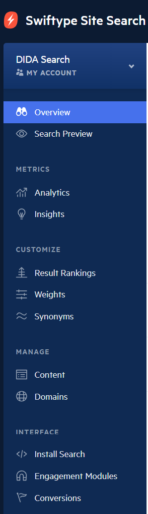
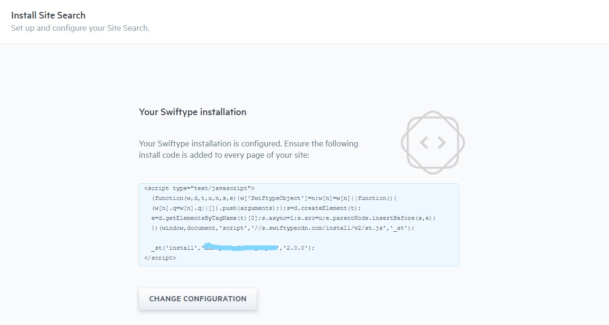
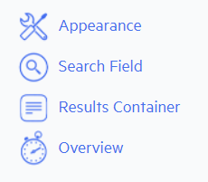
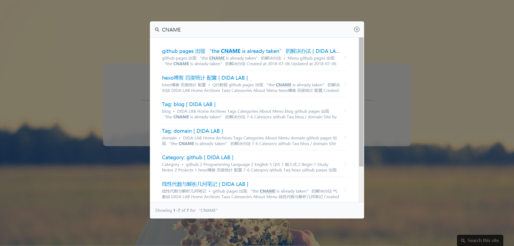

前言
随着博客的文章增多，添加一个博客站内搜索的功能就显得很有必要。
而第三方站内搜索的插件有：
google自定义搜索（免费的标准版貌似有广告而且要科学上网）
百度站内搜索（貌似不支持https并且只显示收录的页面）
swiftype站内搜索（我的选择）
swiftype网站配置
首先注册swiftype账号并登录，也可直接使用google账号登录
然后选择
CREATE A NEW ENGINE,再进行填入网址等一系列操作,设置默认就好得到左边为各项设置的搜索引擎界面

- 点击
install search，进入安装代码界面,并将这段代码复制

- 点击
change configuration，可以看到左边有设置选项

- 特别注意，
search field选项
如果博客本身就有搜索框，那么修改搜索框的
class为st-default-search-input就好了
但是如果没有，则可以自行添加搜索框，并修改class；或者选择swiftype提供的搜索框即可
由于我的博客（random主题）本身没有搜索框，所以直接选择了swiftype提供的搜索框
同时，可以在左侧的设置选项中
查看搜索统计情况、预览搜索结果、设置搜索权重、添加域名、查看抓取的页面等注意：swiftype的爬虫抓取页面需要一定的时间，所以可能需要等一会到此为止，swiftype网站的配置就完成了
博客的配置
- 打开博客主题的配置文件
_config.yml，在最后添加
1 | # swiftype站内搜索 |
打开博客主题的
layout文件夹，在其中找到footer.swig文件（或者其他以footer命名的文件），把之前复制的脚本代码粘贴到其中注意：要放在
body标签中至此，博客站内搜索的工作就做完了，然后重新将博客deploy即可
搜索效果
